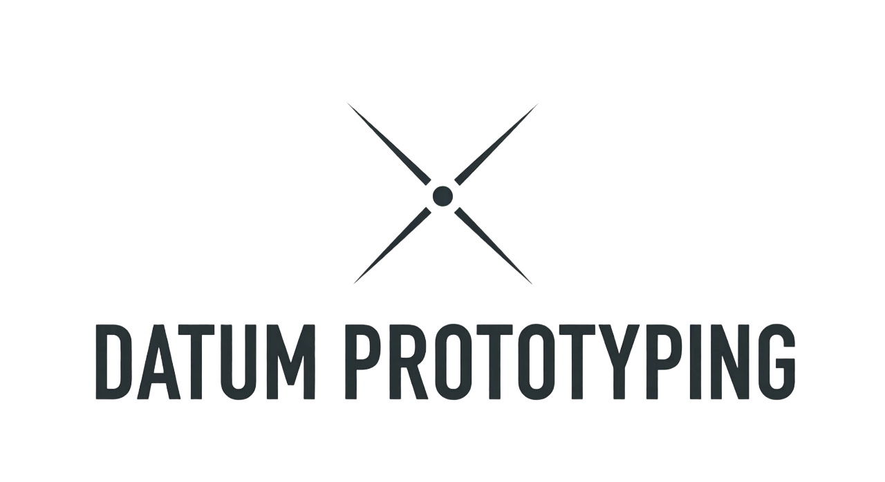

Dokument: Teknisk SpecifikationOperatør Data
Navn: G. Cilinder-Hansen
Profil: Moden / 32 År
Uddannelse: Finmekaniker (TEC)
Standard: ISO 286 Metrologi
Dette dokument tjener som formel verifikation af teknisk kapacitet, maskinforståelse og metodik inden for finmekanisk produktion, instrumentmageri og prototype-udvikling.
Maskinpark & Tolerance
Haas ST10 / Mini Mill
Optimering af skæredata via Fusion 360 (CAD/CAM).
Weiler Matador / Deckel
Højpræcision med absolut fokus på koncentricitet.
Standard Operating Procedure
Termisk Kontrol
Strategien tilpasses materialets termiske stabilitet for at sikre geometrisk overensstemmelse ved kritiske mål (H7/f7).
- ▪ Alu 6082-T6 / 7075 (Finish)
- ▪ Rustfast 316 / A4 (Kølingskontrol)
- ▪ Værktøjsstål (Slidstyrke & Pasning)
CAM Strategi (Skrub/Slet)
- Adaptive Clearing: Konstant værktøjsbelastning for minimering af spænding.
- 2D Contour / 3D Horizontal: Fokus på endelig overfladefinish uden vibrationsmærker.
Track Record // Cases
Flame Eater MK2 // Vakuum Motor
Samlet systemmontage i støbejern/rustfast stål.
Tac Table // Optisk Platform
Custom monteringsenhed til våbenmekaniker (Alu 6082-T6).
Ring Bender MK-I
Reverse engineering og redesign fra plast til metalhybrid.
Kvalitetssikring & QA
Fravælger digitale skydelærer ved kritiske pasninger til fordel for kalibreret, mekanisk metrologi for at sikre korrekt føling for indgreb.
- ▪ Trepunktsmålere / Mikrometerskruer
- ▪ Måleure (0.001mm opløsning)
- ▪ Passerdorne (ISO 286 kontrol)